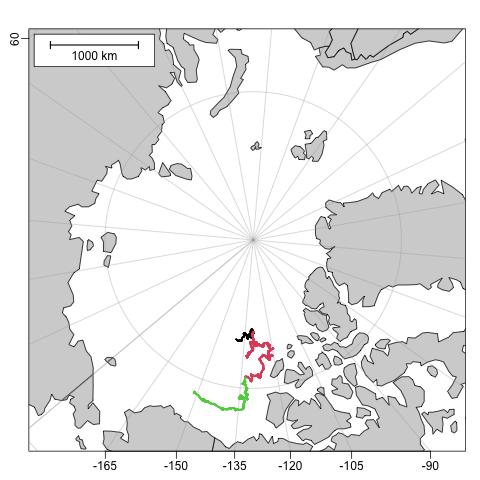

dod.ctd.itp() downloads CTD data from the Woods Hole Oceanographic
Institutions Ice-Thethered Profile program
https://www2.whoi.edu/site/itp/. Note that this
server does not provide a searchable index, so users will need to visit the website
https://www2.whoi.edu/site/itp/data/ to determine IDs of interest. Please
take note of the ‘Historical update’ section, regarding whether to
supply ID (with or without info) or to supply url.
Usage
dod.ctd.itp(
ID,
info = FALSE,
url,
file = NULL,
destdir = ".",
age = 0,
quiet = FALSE,
debug = 0
)Arguments
- ID
an integer specifying the ID of the profiler that is of interest.
- info
a logical value. If
infois FALSE, which is the default, thendod.ctd.itp()downloads the zip-format file that can be expanded into a directory that holds a data file for each profile made by the profiler with the givenID. The name of the zip file is returned. (This file must be unzipped to access the data;unzip()is a convenient way to do this.) On the other hand, ifinfois TRUE, then nothing is downloaded, anddod.ctd.itp()returns a URL holding information about the profiler.- url
optional character value supplying the full URL for the sought-after file. If this is supplied, then both
IDandinfoare ignored. See “Historical notes” to learn more about this parameter.- file
character value giving the name to be used for the downloaded file. If
fileis NULL, which is the default, then the filename on the server is used.- destdir
a character value indicating the directory in which to store downloaded files.
- age
a numerical value indicating a time interval, in days. If the file to be downloaded from the server already exists locally, and was created less than
agedays in the past, it will not be downloaded again. Settingage=0forces a download, so that existing files will always be updated. By contrast, settingageto a negative number prevents the updating of files that already exist locally, regardless of their age.- quiet
a logical value, passed to
curl::curl_download(), which does the downloading. If this is TRUE (the default), then the work is done quietly. Until version version 0.1.12, this parameter was calledsilent, but it was renamed to match the corresponding argument incurl::curl_download(), which may be more familiar to users.- debug
an integer value indicating the level of debugging. If this exceeds 0, then some debugging messages will be printed. This value is passed down to related functions, but with 1 subtracted for each pass.
Value
dod.ctd.itp() returns the full pathname of the
downloaded zip file, or a URL of an information site,
depending on the value of info.
Historical notes
2025-08-19. The
urlparameter was added, when it was discovered that the organizational structure of the remote-server directories had changed compared with that upon which the code forIDandinfowas written. It is possible that the code that handlesIDandinfowill be updated for the new organizational structure, but, even if it is, users may be better-off by exploring the server website and isolating files of interest that way. Supplyingurlis also advantageous because it lets the user control what version of data are to be downloaded, as in the “Worked Example”.
Worked Example
Note that the following code is not run during the package build process, as it downloads a large file. It was last run, and the resultant PNG created, on 2025-08-19.
library(dod)
library(oce)
url <- paste0(
"https://scienceweb.whoi.edu/itp/data/",
"itpsys137/itp137_level2.nc"
)
nc <- dod.ctd.itp(url = url, age = 1)
d <- oce::read.netcdf(nc)
time <- as.POSIXct("1970-01-01") + 86400 * d[["profile_info/time"]]
lat <- d[["profile_info/latitude"]]
lon <- d[["profile_info/longitude"]]
png("itp.png")
data(coastlineWorld)
par(mar = c(2, 2, 2, 1))
mapPlot(coastlineWorld,
longitudelim = c(-180, 180), latitudelim = c(70, 90),
projection = "+proj=stere +lat_0=90 +lat_ts=90 +lon_0=-130",
col = "lightgray"
)
col <- cut(time, "year")
mapPoints(lon, lat, cex = 0.3, pch = 20, col = col)
mapScalebar("topleft", length = 1000)
See also
Other functions that download files:
dod.amsr(),
dod.buoy(),
dod.coastline(),
dod.ctd(),
dod.ctd.bats(),
dod.ctd.bbmp(),
dod.ctd.gtspp(),
dod.met(),
dod.tideGauge(),
dod.topo()